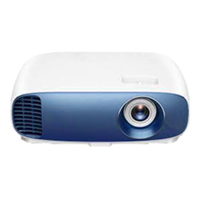

{% extends 'new_site/base.html' %}
{% load custom_filters %}


{% block title %}{{title}}{% endblock %}
{% block javascript %}
<script src="https://ajax.googleapis.com/ajax/libs/jquery/3.4.1/jquery.min.js"></script>
<script src="../../static/js/scripts.js"></script>
{% endblock %}

{% block content %}
<div class="rooms">
    {% for room in rooms %}
    <div class="room" id="room_{{ room.id }}">
        <h1><a href="/rooms/{{room.id}}">{{ room.name }}</a></h1>
        <p><b>Мест:</b> {{room.seats}}</p>
        <p>{{ schedule|get_item:room.id }}</p>
        {% if room.board %}
        <div class="description_image-board">
            
        </div>
        {% endif %}
        {% if room.projector %}
        <div class="description_image-projector">
            
        </div>
        {% endif %}
    </div>
    {% endfor %}

    {% if request.user|has_group:"manager" %}
    <div class="add_room">
        <a href="/addroom"><input type="button" class="add" value="+ Добавить комнату"></a>
    </div>
    <div class="spacer"></div>
    <div class="meetings"></div>

    <script>
        const ws = new WebSocket(`ws://${window.location.host}/rooms/43/`)

        ws.onmessage = function (e) {
            const data = JSON.parse(e.data)
            //commentsList = document.getElementById
            console.log("e.data")
        };

    </script>

    <script>
        var seconds = 10;
        var timeout = 1000 * seconds;
        const csrftoken = document.getElementsByName('csrfmiddlewaretoken').item(0).value

        // первый вызов при загрузке
        update_meetings({{ user.id }}, csrftoken);

        // зациклить обновление встречь с заданным интервалом
        setTimeout(function run_update_meetings() {
            update_meetings({{ user.id }}, csrftoken);
        setTimeout(run_update_meetings, timeout);
    }, timeout);
    </script>

    <script>

        // функция подтверждения/отклонения встречь
        function send_meeting_answer(answer, elem) {

            ws.send(JSON.stringify({ "manager_id": "{{user.id}}" }))
            // возвращает html-элемент о подтверждении/отклонении встречи
            create_html_answer(answer, elem)


            interval_seconds = 1

            // запрос на сервер об обновлении списка записей
            /*var answ = setTimeout(function () {
                $.ajax({
                    type: "post",
                    data: { "answer": answer, "meeting_id": elem, "csrfmiddlewaretoken": csrftoken },
                    success: function (response) {
                        update_meetings({{ user.id }}, csrftoken);
            },
                }
                )}, 1000 * interval_seconds)*/

        }
    </script>

    {% endif %}


    {% endblock %}